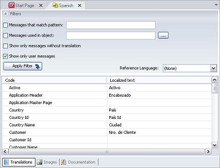
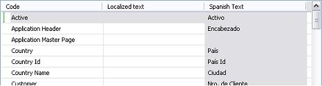
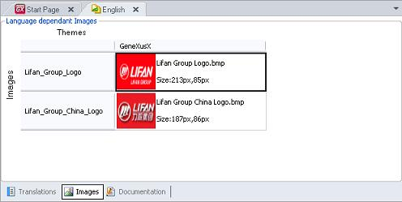

To prepare translation of titles and labels, double click on language selected in Folder View. This will make available the dialog necessary to perform the translation task. Translations selectorThis selector is where translations are done. For the example in the image below, Spanish was the language selected.  There are two columns: "Code" and "Localized text". By default, the first column includes everything translatable existing in the KB. The other column includes text already translated, and text still to be translated. Besides the messages listed by GeneXus, it is also possible to enter text directly. For instance, focus on any line and press <Enter>. The first line will be made available to enter the message. FiltersThere are filters to enable a quicker location of the desired messages.
Note: from GeneXus 16 Upgrade 5 "User messages" are included in the language object when objects are specified and the environment have translation (ie. Translation Type Property is set to "static" or "run-time"). Reference Language Combo BoxAllows indication of the language to be taken as reference in case of need to translate into another language. For example, for translating into Portuguese, it could prove more useful to use Spanish as the reference language rather than English. So, to start from Spanish when in the Portuguese Language Object, select Spanish from the list of languages of the combo box and GeneXus will immediately add a new column (read-only) that the user will be able to use as a guide in the translation process.  Images selectorThis selector shows which images depend on the language (the setting of images with languages and themes is done in the image object itself). In the image, it is clear that thre is an image for English and another image for SimplifiedChinese.  Documentation selectorSee Documenting. See alsoFolder View |